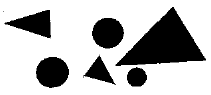
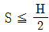

실내건축기사(구) (2003-08-31 기출문제)
1과목: 실내디자인론
1. 스케일(scale)에 대한 설명으로 옳지 않은 것은?
- 스케일은 라틴어에서 유래된 것으로 도구를 나타내는것,즉 계단, 사다리를 뜻하는 고어이다.
- 휴먼스케일은 인간의 신체를 기준으로 파악, 측정되는 절대적인 크기이다.
- 실내디자인의 공간을 이해하고 디자인 하는 도구의 하나이다.
- 휴먼스케일이 잘 적용된 실내는 안정되고 안락한 느낌을 준다.
(정답률: 30%)

2. 선이 갖는 조형심리적 효과에 대해 바르게 설명하고 있는 것은?
- 수직선은 구조적인 높이와 존엄성을 느끼게 한다.
- 수평선은 확대, 무한 등의 느낌을 줌과 동시에 감정을 동요시키는 특성이 있다.
- 사선은 생동감이 넘치는 에너지를 느끼게 하며, 동시에 안정되고 편안함을 준다.
- 곡선은 경쾌하며 남성적인 느낌을 들게 한다.
(정답률: 73%)
3. 다음의 전시공간의 동선에 관한 설명 중 가장 적절하지 않은 것은?
- 동선의 정체 현상은 입구와 출구가 분리된 경우 일반적으로 마지막 전시장과 출구 부분에서 가장 심하다.
- 동선은 대부분 복도 형식으로 이루어지는데, 일반적으로 복도는 3m 이상의 폭과 높이가 요구된다.
- 전시공간내의 전체동선체계는 주체별로 분류하면 관람객 동선, 관리자 동선 및 자료의 동선으로 구분된다.
- 관람객 동선은 일반적으로 접근, 입구, 전시실, 출구, 야외전시 순으로 연결된다.
(정답률: 42%)
4. 재료의 질감(texture)을 선택할 때 고려해야 할 점과 가장 거리가 먼 것은?
- 색조
- 빛의 반사 또는 흡수
- 촉감
- 스케일
(정답률: 50%)
5. 백화점 실내공간의 색채계획에 대한 설명 중 부적합한 것은?
- 색상은 조명효과와 고객의 시각 심리를 함께 고려하여 정한다.
- 다양한 상품색이 혼합되어 있는 곳에서는 중채도의 색을 위주로 한 배색을 한다.
- 구매욕구를 북돋우기 위해 악센트색을 넓은 면적에 적용한다.
- 밝은 색조를 사용하면 어두운 색보다 공간의 크기가 확장되어 보인다.
(정답률: 68%)
6. 모듈(module) 시스템을 적용한 실내계획에 대한 설명 중 부적합한 것은?
- 실내구성재의 위치, 설정이 용이하고 시공단계에서 조립 등의 현장작업이 단순해진다.
- 미적질서는 추구되나 설계단계에서 조정작업이 복잡해진다.
- 기본 모듈이란 기본척도를 10㎝로 하고 이것을 1M 으로 표시한 것을 말한다.
- 공간구획시 평면상의 길이는 3M(30㎝)의 배수가 되도록 하는 것이 일반적이다.
(정답률: 53%)
7. 한 선분을 길이가 다른 두 선분으로 분할했을 때 긴 선분에 대한 짧은 선분의 길이의 비가 전체선분에 대한 긴 선분의 길이의 비와 같을 때 이루어지는 비례는?
- 피보나치 비율
- 정수비례
- 황금비
- 비대칭 분할
(정답률: 62%)
8. 다음 중 창과 문이 가지는 실용적인 기능과 가장 거리가 먼 것은?
- 공기와 빛의 통과(통풍과 채광)
- 전망과 프라이버시의 확보
- 사람을 통과시키는 개구부
- 공간의 크기와 형태를 결정
(정답률: 47%)
9. 기존 실내공간에 대한 개보수(renovation)의 경우 고려해야 할 사항으로 옳은 것은?
- 기존도면이 있을 경우 별도의 실측을 필요로 하지 않는다.
- 기존 건축구조의 영향을 전혀 받지 않는다.
- 기존 설비관련 사항에 대한 재검토가 필요 없다.
- 실측과 검사를 통해 공간의 실체를 명확하게 파악해야 한다.
(정답률: 71%)
10. 디자인의 조화(통일성과 다양성)에 대한 다음 설명 중 잘못된 것은?
- 통일성을 이루기 위해서는 전체가 개개의 부분들을 지배해야 한다.
- 여러가지 형태나 색의 다양성을 통일하면 조화가 이루어진다.
- 분명한 디자인의 개념은 통일성 있는 디자인의 기초가 된다.
- 통일성을 얻기 위한 구체적인 방법은 주로 강조, 대칭 등이 있다.
(정답률: 55%)
11. 다음중 눈부심이 일어나기 쉬우며 빛에 의한 그림자가 가장 강하게 나타나는 조명 방법은?
- 직접조명
- 반간접조명
- 간접조명
- 전반확산조명
(정답률: 44%)
12. 실내디자인의 대상공간을 분류 기준으로 한 영역들에 대한 설명 중 틀린 것은?
- 주거공간 디자인은 개인과 가족생활을 위한 다양한 주택내부를 디자인 하는 영역이다.
- 업무공간 디자인은 기업체 사무공간, 백화점, 공장등의 실내를 디자인 하는 영역이다.
- 상업공간 디자인은 소매점, 레스토랑 등의 실내를 디자인 하는 영역이다.
- 기념전시공간 디자인은 박물관, 전시관, 미술관 등의 실내를 디자인 하는 영역이다.
(정답률: 67%)
13. 실내공간을 구성하는 요소에 관한 설명 중 가장 옳지 않은 것은?
- 상승된 바닥은 다른 부분보다 중요한 공간이라는 것을 나타낸다.
- 벽의 높이가 가슴 정도이면 주변공간에 시각적 연속성을 주면서도 특정 공간을 감싸주는 느낌을 준다.
- 천정의 높이는 실내공간의 사용목적과 관계없이 2.3 미터로 하는 것이 가장 좋다.
- 벽, 문틀, 문과의 관계에서 색상은 실내분위기 연출에 영향을 주는 중요한 요소가 된다.
(정답률: 83%)
14. 실내장식물에 관한 다음의 설명 중 관계가 없는 것은?
- 실내 장식물은 기능은 없고 미적 효용성을 더해주는 물품을 말한다.
- 실내장식물은 공간을 강조하고 흥미를 높여주는 효과가 있다.
- 실내장식물은 개성을 표현하는 자기 표현의 수단이 될 수 있다.
- 실내장식물은 배치장소의 선택에 신중을 기하여 주변 물건들과의 조화 등을 고려하여 선택해야 한다.
(정답률: 79%)
15. 상점의 동선계획에 대한 설명 중 옳지 않은 것은?
- 동선의 흐름은 공간적, 물리적인 흐름뿐만이 아니라 시각적인 흐름도 원활하도록 한다.
- 고객 동선은 흐름의 연속성이 상징적, 지각적으로 분할되지 않는 수평적 바닥이 되도록 한다.
- 고객의 동선은 고객의 편의를 위해 가능한한 짧게 한다.
- 고객을 위한 통로폭은 최소 900mm 이상으로 한다.
(정답률: 74%)
16. 공간을 형성하는 부분(바닥, 벽, 천장)과 설치되는 가구, 기구들의 위치를 정하는 단계는 디자인 단계 중 어느 단계인가?
- 공간설정의 단계
- 디자인 이미지의 구축단계
- 레이아웃(lay-out)단계
- 생활패턴의 파악단계
(정답률: 45%)
17. 주거공간의 영역구분(zoning)으로 가장 부적당한 것은?
- 행동의 목적에 따른 구분
- 공간의 사용시간에 따른 구분
- 공간의 분위기에 따른 구분
- 사용자의 범위에 따른 구분
(정답률: 63%)
18. 실내디자인의 영역이 건축영역에서 구분되고, 독립되기 시작한 배경으로 옳은 것은?
- 전문화, 정치화
- 통합화, 세분화
- 세분화, 전문화
- 정치화, 통합화
(정답률: 79%)
19. 디자인의 기본요소인 점에 관한 설명으로 옳은 것은?
- 다양한 모양을 갖는다.
- 크기가 없고 위치만 있다.
- 주변환경에 관계없이 절대적으로 지각된다.
- 면과 선의 교차에서는 나타나지 않는다.
(정답률: 58%)
20. 실내디자인의 프로그래밍(Programming)은 목표설정 - 조건 - 분석 - 종합 - 결정의 순서로 진행된다. 다음 중 분석단계에서 행해져야 할 사항은?
- 총 공사비 산출
- 계획도면의 확정
- 자료분류 및 정보의 해석
- 실내 마감재 및 색채결정
(정답률: 83%)
2과목: 색채학
21. 색료의 3원색이 아닌 것은?
- blue
- cyan
- yellow
- magenta
(정답률: 57%)
22. 다음 중 가장 명도차가 큰 배색의 사례는?
- 파랑-빨강
- 연두-청록
- 파랑-주황
- 노랑-녹색
(정답률: 56%)
23. 디자인 사조에서의 양식과 색채의 관계를 묶은 것이다. 잘못된 조합은?
- 미니멀리즘 - 단순한 기하학적 형태를 사용하지만 색채는 다양하게 사용
- 팝아트 - 전체적으로 어두운 색조 사용하고 그 위에 혼란한 강조색 사용
- 데스틸 - 검정, 흰색과 빨강, 노랑, 파랑의 순수한 원색
- 아르누보 - 연한 파스텔계통의 부드러운 색조
(정답률: 40%)
24. 다음 중 색채조절시 고려해야 할 요소와 거리가 먼 것은?
- 눈의 피로를 감소시켜야 한다.
- 작업의 활동적인 의욕을 높인다.
- 위험을 방지하는 안전을 고려한다.
- 심미적인 조화를 우선적으로 고려한다.
(정답률: 56%)
25. 추상체와 간상체 양쪽이 작용하지만 상이 흐릿하여 보기 어렵게 되는 시각상태를 무엇이라 하는가?
- 색순응
- 박명시
- 암순응
- 중심시
(정답률: 71%)
26. 마음을 편안하게 해주며 신경 및 근육의 긴장을 완화시키는 효과가 있다고 알려진 색은?
- 회색
- 보라색
- 초록색
- 노란색
(정답률: 75%)
27. 다음 빛에 대한 설명 중 맞는 것은?
- 분광 된 빛을 프리즘에 통과시키면 또 분광이 된다.
- 가시광선에서 파장이 긴 부분은 푸른색을 뛴다.
- 가시광선의 범위는 380nm에서 780nm라고 한다.
- 자외선은 열 작용을 하므로 열선이라고도 한다.
(정답률: 52%)
28. 다음 채도의 설명 중 가장 적절한 것은?
- 순색으로 반사율이 높은 색이 채도가 높다.
- 반사량이 적은 색이 채도가 높다.
- 채도에서는 포화도가 존재하지 않는다.
- 무채색도 채도 값이 있다.
(정답률: 56%)
29. 다음 중 가장 짧은 파장의 빛은?
- 녹색
- 파랑
- 빨강
- 노랑
(정답률: 62%)
30. 감법혼색에 대한 설명 중 옳은 것은?
- 혼합색의 밝기는 사용색의 면적비에 의해 평균되어 나타난다.
- 감법혼색의 삼원색은 자주(M),황색(Y),녹색(G)이다.
- 혼합하면 할 수록 명도가 높아진다.
- 색을 혼합할 수록 색은 점점 탁하고 어두워진다.
(정답률: 67%)
31. KS의 일반 색명은 어느 색명법에 근거를 두고 있는가?
- ASA
- CIE
- ISCC-NBS
- NCS
(정답률: 31%)
32. 조명등과 연색성에 관한 설명 중 틀린 것은?
- 청색은 백열등에서 약간 녹색을 띤다.
- 청색은 형광등에서는 크게 변하지 않는다.
- 나트륨등에서는 빨강이 강조된다.
- 적색은 백열등에서 더욱 선명하다.
(정답률: 48%)
33. 다음 배색 중 인접색의 조화에 가장 가까운 것은?
- 연두 - 보라 - 빨강
- 주황 - 청록 - 자주
- 빨강 - 파랑 - 노랑
- 자주 - 보라 - 남색
(정답률: 62%)
34. 먼셀표색계에 관한 다음 기술 중 잘못된 것은?
- 채도는 2, 4, 6 등과 같이 2단위로 구분하였으나, 저채도 부분에 1, 3을 더 추가하였다.
- 색상은 적, 황, 녹, 청, 자색을 기본색으로 하였다.
- 색표시법은 H C/V이다.
- 명도는 1단위로 구분하였으나 정밀한 비교를 감안하여 0.5단위로 나눈 것도 있다.
(정답률: 55%)
35. 먼셀의 색상기호 "2.OYR 3.5/4.0"과 같은 관용색명은?
- 황토색(Yellow Ocher)
- 밤색(Maroon)
- 진분홍(Rose Carmine)
- 레몬색(Lemon Yellow)
(정답률: 16%)
36. 문.스펜서의 면적효과에서 가장 잘 어울리는 강한 색과 약한 색의 면적의 비는?
- 3 : 5
- 4 : 26
- 7 : 20
- 12 : 32
(정답률: 40%)
37. 색의 상징성과 관련된 내용 중 가장 타당한 것은?
- 빨강 - 대륙으로는 아프리카 대륙을 상징
- 노랑 - 안전색채로는 주의 또는 경계를 상징
- 파랑 - 신분이나 연령으로는 원숙함을 상징
- 흰색 - 전통 오방에서 남쪽을 상징
(정답률: 73%)
38. 세계의 어린이들이 가장 선호하는 색으로 학문적으로는 사회과학을 나타내고, 기본적으로 자손의 번창을 의미하는 색은?
- 보라색
- 초록색
- 하늘색
- 노란색
(정답률: 45%)
39. 빨간 성냥불을 어두운 곳에서 돌리면 길고 선명한 빨간원이 생긴다. 이러한 현상은?
- 색의 동화
- 색의 대비
- 색의 잔상
- 색의 시인성
(정답률: 67%)
40. 다음 중 색상대비의 효과가 가장 명료한 것은?
- 빨강/자주
- 빨강/파랑
- 파랑/보라
- 보라/검정
(정답률: 71%)
3과목: 인간공학
41. 그룹(Grouping)의 이론으로서 다음 그림에 해당되는 요인은?

- 크기의 요인
- 형태의 요인
- 위치, 접근의 요인
- 명도, 색상의 요인
(정답률: 41%)
42. 잔상(after-images)에 대한 설명 중 틀린 것은?
- 음잔상에서는 흑백이 뒤바뀐다.
- 잔상과 시각의 뒤바뀜은 관계가 없다.
- 잔상이란 망막이 자극을 받은 후 시신경의 흥분이 남아있다는 것이다.
- 음잔상에서는 색의 보색이 보인다.
(정답률: 50%)
43. 도로 표지판이 가져야 할 요건이 아닌 것은?
- 적당한 거리에서 볼 수 있어야 한다.
- 상징하고자 하는 것을 시각적으로 암시해야 한다.
- 지리적 경계내에서 표준화되어야 한다.
- 다른 표지판과 디자인, 색상이 통일되어야 한다.
(정답률: 64%)
44. 적색글씨를 청색바탕에 표시하면 입체로 보이며 눈이 피로해지는 이유는?
- 푸르킨예(Prukinje) 현상 때문
- 색맹 때문에
- 극성(Polarity) 현상 때문에
- 색입체시 현상 때문
(정답률: 23%)
45. 다음 중 소리의 특성을 결정하는 물리량이 아닌 것은?
- 진동수
- 음의 강도
- 음원
- 음량
(정답률: 53%)
46. 물리적 자극을 상대적으로 판단하는데 있어, 변화감지역은 사용되는 표준자극의 크기에 비례한다는 법칙은?
- Weber법칙
- Newton법칙
- 7+/-법칙
- Taylor법칙
(정답률: 60%)
47. 다음 중 인체측정에 대한 설명 중 잘못된 것은?
- 키는 발바닥에서부터 머리 윗부분 끝까지의 거리를 말한다.
- 곧게 앉은키는 허리를 곧게 뻗어 세운 상태에서 의자 자리판으로부터 머리끝까지의 거리를 말한다.
- 엉덩이의 폭은 엉덩이의 가장 넓은 폭을 잰 측정값을 말한다.
- 넓적다리의 허용 높이는 의자 자리판으로부터 넓적다리와 골반이 만나는 윗부분까지의 수직길이이다.
(정답률: 50%)
48. 다음 중 사용자 인터페이스의 요소가 아닌 것은?
- 데이터모델
- 네비게이션모델
- 대화모델
- 윈도즈
(정답률: 35%)
49. 다음 표시등 계기 표시방식 중 판독 오류율이 가장 작은 것은?
- 수직식
- 수평식
- 반원식
- 창을 연 방식
(정답률: 38%)
50. 다음 중 인간공학적인 사고방식이 아닌 것은?
- 작업에 적합한 사람들을 선별하여 배치하는 방식 (fitting the human to the task)이 우선되어야 한다.
- 인간의 오류는 조작자뿐만 아니라 환경적 요인, 관리적 요인 등 복합적인 요인에 의한 것이므로 시스템적 사고방식이 필요하다.
- fail-safe, fool-proof등의 기능이 있도록 시스템을 설계한다.
- 설비나 시스템을 사용자의 측면에서 설계한다.
(정답률: 42%)
51. 인간공학의 연구분야를 묶은 것 중 비교적 적합치 못한 것은?
- 심리학 - 생리학 - 사회학
- 전자공학 - 심리학 - 기계공학
- 의학 - 사회학 - 경영학
- 환경심리학 - 환경의학 - 환경공학
(정답률: 48%)
52. 사람이 가장 예민하게 반응하는 미각은?
- 짠맛
- 신맛
- 단맛
- 쓴맛
(정답률: 27%)
53. 적당한 거리를 둔 장소에서 적당한 강도의 빛을 적당한 시간 간격으로 차례차례 보내면 빛이 이동하는 것처럼 보이는 현상은?
- 입체감각
- 외관의 운동
- 이중상
- 착각
(정답률: 38%)
54. 다음 중 사람의 직립자세에서 상향시선의 한계는?
- 30도
- 40도
- 50도
- 60도
(정답률: 21%)
55. 정신적 활동이 둔화되고 반응이 늦으며 착오가 시작되는 실내온도는?
- 10℃
- 18℃
- 24℃
- 29℃
(정답률: 25%)
56. 건강한 성인의 귀에 가장 민감한 소리의 진동수는?
- 100 Hz
- 500 Hz
- 3000 Hz
- 10,000 Hz
(정답률: 17%)
57. 다음 중 조도(illumination)의 단위는?
- 칸델라(candela)
- 룩스(lux)
- 왓트(watt)
- 루멘(lumen)
(정답률: 43%)
58. 손의 기본 지각기능에서 정보수집의 종류와 거리가 가장 먼 것은?
- 입체식별 기능
- 중량식별 기능
- 색 식별 기능
- 경도식별 기능
(정답률: 72%)
59. 자동차 제동폐달을 효율적으로 사용하기 위해서는 대퇴부와 경부의 각도를 어느 정도 유지하는 것이 가장 적절한가?
- 90도
- 180도
- 120도
- 150도
(정답률: 47%)
60. 마음껏 양팔을 편 경우에 도달할 수 있는 최대 영역을 무엇이라 하는가?
- 정상작업 영역(normal working area)
- 평면작업 영역(working area in horizontal plan)
- 최대작업 영역(maximum working area)
- 수직면작업 영역(working area in vertical plan)
(정답률: 53%)
4과목: 건축재료
61. 합성수지, 아스팔트, 안료 등에 건성유나 용제를 첨가한 것으로, 건조가 빠르고 광택, 작업성, 점착성 등이 좋아 주로 옥내 목부바탕의 투명마감도료로 사용되는 것은?
- 바니쉬
- 래커 에나멜
- 에폭시 수지 도료
- 광명단
(정답률: 47%)
62. 다음은 파티클보드에 관한 설명이다. 틀린 것은?
- 상판, 칸막이벽, 가구 등에 이용된다.
- 온도에 의한 변형이 크다.
- 흡음, 단열, 차단성이 양호하다.
- 합판에 비해 휨강도는 떨어지나 면내 강성은 우수하다.
(정답률: 27%)
63. 목재의 건조방법중 인공건조법이 아닌 것은?
- 열기건조법
- 전기건조법
- 침수건조법
- 증기건조법
(정답률: 46%)
64. 집성재(集成材)에 관한 설명 중 부적당한 것은?
- 소재의 강도 및 탄성을 충분히 활용한 인공목재의 제조가 가능하다.
- 대단면, 만곡재 등 임의의 단면형상을 갖는 인공목재를 비교적 용이하게 제작할 수 있다.
- 여러 개의 작은 단면을 합칠 때는 합판과 같이 섬유방향을 직교(直交)시킨다.
- 제재품이 가진 옹이 등의 결점을 분산시키므로 강도에 변화가 적다.
(정답률: 13%)
65. 석고 플라스터에 대한 설명으로 옳지 않은 것은?
- 보드용 석고플라스터는 바탕과의 부착력이 강하고, 석고라스 보드 바탕에 적합하다.
- 수축률이 크고 균열이 쉽게 생긴다.
- 물에 용해되기 때문에 물을 사용하는 부위에는 부적합하다.
- 가열하면 결정수를 방출하여 온도상승을 억제하기 때문에 내화성이 있다.
(정답률: 37%)
66. 다음 중 기경성이 아닌 미장 재료는?
- 소석회
- 시멘트 모르터
- 회반죽
- 돌로마이트 플라스터
(정답률: 29%)
67. 세라믹재료에 대한 다음 설명중 틀린 것은 어느 것인가?
- 내열성, 화학저항성이 우수하다
- 내후성이 나쁘며, 취성이다.
- 단단하고, 압축강도가 높다.
- 전기절연성이 있다.
(정답률: 63%)
68. 재료의 단열성에 대한 설명 중 올바른 것은?
- 재료의 단열성은 재료 두께에 비례한다.
- 열전도율은 재료가 절건상태일 때 가장 크고 함수율이 증대할 수록 작아진다.
- 동일재료라도 표면이 거칠수록 열전달이 적고 단열성이 높아진다.
- 일반적으로 재료밀도와 열전도는 무관하다.
(정답률: 16%)
69. 콘크리트를 설명하는 내용으로 틀린 것은?
- 물시멘트비는 콘크리트 강도에 영향을 주는 주된 인자이다.
- 공기연행제를 넣으면 강도가 증가한다.
- 추우면 경화가 지연되므로 콘크리트의 강도가 어느 정도에 도달할 때까지 보온 양생을 한다.
- 결합재로 시멘트 대신 레진을 이용한 콘크리트를 레진 콘크리트라 한다.
(정답률: 36%)
70. 콘크리트의 크리프변형에 관한 기술로서 틀린 것은?
- 시멘트량이 많을수록 크다.
- 부재의 건조 정도가 높을수록 크다.
- 재하개시의 재령이 짧을수록 커진다.
- 부재의 단면치수가 클수록 커진다.
(정답률: 48%)
71. 금속재의 방식 방법으로 적당하지 않은 것은?
- 가능한 상이한 금속은 이를 인접 또는 접촉시켜 사용한다.
- 균질의 것을 선택하고 사용할 때 큰 변형을 주지 않는다.
- 표면을 평활, 청결하게 하고 가능한 한 건조상태로 유지한다.
- 큰 변형을 준 것은 가능한 한 풀림하여 사용한다.
(정답률: 60%)
72. 실리콘(Silicon) 수지에 대한 설명 중 틀린 것은?
- 탄성을 가지며 내후성 및 내화학성 등이 아주 우수하기 때문에 접착제, 도료로서 주로 사용된다.
- 70℃~80℃의 고온에서는 연화되는 단점이 있다.
- 가소물이나 금속을 성형할 때 이형제로 쓸 수 있을정도로 피복력이 있다.
- 발수성이 있기 때문에 건축물, 전기 절연물 등의 방수에 쓰인다.
(정답률: 47%)
73. 다음 합성섬유 중 유연하고 울에 가까운 감촉을 가지며, 염색성, 내광성이 있어 의료, 침구, 실내 카펫 등의 인테리어 재료에도 이용되고 있는 것은 어느 것인가?
- 아크릴섬유
- 탄소섬유
- 폴리에스테르섬유
- 폴리비닐알코올섬유
(정답률: 37%)
74. 콘크리트 혼화제인 고성능 감수제에 관한 설명 중 옳지 않은 것은?
- 일반의 감수제에 비하여 시멘트 입자의 분산 성능이 현저히 높다.
- 사용량에 대한 제한이 적다.
- 단위수량을 대폭적으로 감소시킬 수 있다.
- 고강도 콘크리트 제조에는 부적당하다.
(정답률: 44%)
75. 페인트에 관한 기술로서 틀린 것은?
- 보일유는 건조를 빠르게 하고 피막의 강도를 증대시킨다.
- 에나멜 페인트는 보통 유성 페인트보다 광택이 없으며 피막이 견고하지 않다.
- 유성 페인트는 모르터 면의 알카리성에 의해 손상을 입는다.
- 수성 페인트는 광택이 없고 내부마감면에 주로 쓴다.
(정답률: 50%)
76. 대리석의 쇄석, 백색시멘트, 안료, 물을 혼합하여 매끈한면에 타설후 가공 연마하여 대리석과 같은 광택을 내도록한 제품은?
- 테라조
- 의석(모조석)
- 수지계 인조석
- 감람석
(정답률: 38%)
77. 금속제품 중 천장재로 가장 적당하지 않은 것은?
- 코르크 판
- 알루미늄 타일
- 와이어 메쉬
- 스팬드럴 패널
(정답률: 14%)
78. 다음의 금속재료에 대한 설명 중 옳지 않은 것은?
- 스테인레스강은 내화, 내열성이 크며, 녹이 잘 슬지 않는다.
- 동은 화장실 주위와 같이 암모니아가 있는 장소에서는 빨리 부식하기 때문에 주의해야 한다.
- 알루미늄은 콘크리트에 접할 경우 부식되기 쉬우므로 주의하여야 한다.
- 청동은 구리와 아연을 주체로 한 합금으로 건축장식 철물 또는 미술공예 재료에 사용된다.
(정답률: 40%)
79. 건물의 바닥 끝맺임 재료로서 가장 부적당한 것은?
- 모자이크 타일
- 아스팔트 타일
- 사이딩 보드
- 고무 타일
(정답률: 39%)
80. 타일에 관한 설명중 부적합한 것은?
- 내수성이 크고, 흡수율이 작으며, 경량, 내화, 형상과 색조의 자유로움 등의 우수한 성질이 있다.
- 조적조와 철근 콘크리트조의 내, 외벽 및 바닥뿐만 아니라 목조의 외장에도 적용할 수 있다.
- 바닥용 타일은 시유타일이며 건식법으로 제조된다.
- 일반적으로 외장타일은 내장타일보다 흡수율이 낮다.
(정답률: 28%)
5과목: 건축일반
81. 건축물의 내부에 설치하는 피난계단에 대한 설명으로 옳지 않은 것은?
- 건축물의 내부와 접하는 계단실의 창문은 망이 들어있는 유리의 붙박이창으로서 그 면적을 각각 1m2 이하로 할 것.
- 계단은 내화구조로 하고 피난층 또는 지상까지 직접 연결되도록 할 것.
- 건축물의 내부에서 계단실로 통하는 출입구의 유효너비는 0.8 m 이상으로 하고 그 출입구에는 피난의 방향으로 열 수 있는 갑종방화문을 설치할 것.
- 계단실에는 예비전원에 의한 조명설비를 할 것.
(정답률: 58%)
82. 모더니즘(Modernism)을 추구하는 데 스틸 그룹의 주장과 관련한 내용 중 부적합한 것은?
- 전통성의 영향을 유지하면서 새로운 디자인을 추구
- 회화에서 비롯된 네오 플래스티시즘을 추구
- 절대 필요한 경우를 제외하고 3원색만을 사용
- 가시적 실재를 지배하고 있으나 사물의 외양에 의해 감추어져 있는 보편적인 법칙을 추구
(정답률: 14%)
83. 다음 중 조적조에서 벽체의 두께를 결정하는 요소와 가장 거리가 먼 것은?
- 벽길이
- 벽높이
- 벽쌓기법
- 건축물의 층수
(정답률: 41%)
84. 근린생활시설의 주계단의 난간 손잡이에 관한 설명중 틀린 것은?
- 원형 또는 타원형 단면이고 최대지름은 3.2cm 이상 3.8cm 이하로 한다.
- 벽 등으로부터 3cm 이상 떨어져 설치한다.
- 계단으로부터 높이 85cm 위치에 설치한다.
- 계단끝 수평부분에서의 손잡이는 30cm 이상 밖으로 나오도록 설치한다.
(정답률: 67%)
85. 그리스 신전에 사용된 착시 교정 수법에 관한 설명으로 옳지 않은 것은?
- 기둥은 위로 갈수록 직경이 줄어 들면서 배흘림을 갖도록 하였다.
- 모서리쪽의 기둥 간격을 보다 좁게 하였다.
- 기둥과 같은 수직 부재를 위쪽으로 갈수록 약간 바깥쪽으로 기울게 하였다.
- 기단, 아키트레이브, 코니스에 의해 형성되는 긴 수평선을 위쪽으로 약간 불룩하게 하였다.
(정답률: 39%)
86. 41m를 넘는 층의 바닥면적의 합계가 5,000m2(거실의 바닥면적의 합계 4,000m2)이고 최대층의 바닥면적이 2,000m2(거실 바닥면적은 1,500m2)일 때 비상용 승강기의 최소 설치대수는?
- 1대
- 2대
- 3대
- 4대
(정답률: 28%)
87. 다음 중 건축물의 계단 및 복도의 설치 기준에 관한 설명으로 옳지 않은 것은?
- 계단을 대체하여 설치하는 경사로는 경사도가 1 : 8을 넘지 아니할 것
- 높이가 3m 를 넘는 계단에는 높이 3m 이내마다 너비 1.0m 이상의 계단참을 설치할 것
- 초등학교의 계단인 경우에는 단높이는 16㎝ 이하 단, 너비는 26㎝ 이상으로 할 것
- 문화 및 집회시설 중 공연장으로 쓰이는 건축물의 계단 및 계단참의 너비는 120㎝ 이상으로 할 것
(정답률: 50%)
88. 건축법상 피난시설에 관한 다음 설명 중 부적합한 것은?
- 피난층은 하나의 건축물에 2개 이상 설치해야 한다.
- 직통계단은 각 거실부분으로부터 규정된 보행거리 이내에 있어야 한다.
- 직통계단은 피난층이나 지상까지 직접 연결되어야 한다.
- 5층 이상의 층을 소매시장으로 사용하는 경우에는 피난의 용도로 쓸 수 있는 옥상광장을 설치해야 한다.
(정답률: 29%)
89. 철근콘크리트 구조의 보철근 배근에서 주근의 이음위치로 가장 적당한 것은?
- 보의 지점으로부터 스팬(span)의 1/2되는 곳
- 압축력이 가장 적은 곳
- 인장력이 가장 적은 곳
- 보의 지점으로부터 스팬(span)의 1/4되는 곳
(정답률: 48%)
90. 가구식 구조에 속하는 것은?
- 블록 구조
- 벽돌 구조
- 돌 구조
- 철골 구조
(정답률: 13%)
91. 고대 메소포타미아 건축의 특징과 가장 거리가 먼 것은?
- 아치 및 볼트의 기술을 개발하여 사용하였다.
- 건축의 주재료는 석재를 사용하여 건축하였다.
- 모든 도시는 성곽으로 방어되어있다.
- 지구라트는 이집트의 피라미드와는 달리 종교적인 행사를 위한 신전이다.
(정답률: 20%)
92. 목조건물의 내진(耐震)설계에 있어서 가장 중요한 것은?
- 기초의 구조치수와 형태
- 축조부재의 치수
- 가새의 배치법과 치수
- 지붕의 구조와 형태
(정답률: 36%)
93. 단순조적블록쌓기에서 블록하루쌓기의 표준 높이로 맞는 것은?
- 1.5m 이내
- 1.2m 이내
- 2.1m 이내
- 1.8m 이내
(정답률: 25%)
94. 르 꼬르뷔지에(Le Corbusier)의 스승으로서 구조의 대가이며 평지붕, 옥상정원을 그의 프랭클린가의 저택에서 설계했던 건축가는?
- 토니 가르니에(Tony Garnier)
- 어거스트 페레(August Perret)
- 피레 쟌네레(Pirre Janneret)
- 오쟝팡(A.Ozeafaut)
(정답률: 53%)
95. 작품으로는 바르셀로나 파빌리온, 판스워스 하우스 등이 있으며, " 자유로운 평면과 명쾌한 구조는 서로 뗄 수없는 것이다. 구조는 전체의 골격이며, 자유로운 평면을 가능하게 해 준다."라고 말한 사람은?
- 미스 반 델 로에
- 프랭크 로이드 라이트
- 월터 그로피우스
- 르 코르뷔지에
(정답률: 54%)
96. 로마네스크 건축(Romanesque Architecture)의 실내 공간 특징에 관한 다음의 기술 중 틀린 것은?
- 네이브 부분의 천장에 목조 트러스가 주로 사용되었다.
- 높은 천정고를 형성하기 위한 구조적 기초가 닦였다.
- 3차원적인 기둥간격의 단위로 구성되어졌다.
- 교차 그로인 볼트를 볼 수 있다.
(정답률: 23%)
97. 목재 접합에 대한 다음의 설명 중 옳은 것은?
- 이음: 좁은 폭의 널을 옆으로 붙여 그 폭을 넓게 하는 것
- 쪽매: 두 재를 직각 또는 경사지게 접합하는 것
- 맞춤: 두 재를 맞대고 같은 재로 나비형의 은장을 만들어 끼운 접합
- 연귀: 직교되거나 경사로 교차되는 부재의 마구리가 보이지 않게 빗잘라대는 것
(정답률: 44%)
98. 소방시설 중에서 소화설비에 해당하는 것은?
- 자동화재탐지설비
- 연결송수관설비
- 연결살수설비
- 소화기구
(정답률: 53%)
99. 경량 철골조의 특성에 대한 설명으로 틀린 것은?
- 주택, 간이 창고 등 소규모의 구조물에 쓰인다.
- 비틀림에 대한 저항이 강관구조에 비해 강하다.
- 가공, 조립이 용이하다.
- 경량철골재의 접합은 리벳, 볼트, 용접법이 쓰이며 또한 드라이비트, 그립볼트 등이 사용된다.
(정답률: 48%)
100. 비상경보설비설치를 하여야 할 소방대상물의 기준으로 잘못된 것은?
- 무창층 - 바닥면적 200m2 이상
- 지하층 - 바닥면적 150m2 이상
- 공연장 - 바닥면적 100m2 이상
- 지하가 중 터널 - 길이 500m 이상
(정답률: 21%)
6과목: 건축환경
101. 기온 20℃, 습구온도 20℃일 때 불쾌지수 DI(DiscomfortIndex)를 구하고 불쾌여부를 판정하면?
- 59.4-불쾌하지 않다.
- 69.4-불쾌하지 않다.
- 79.4-불쾌하다.
- 89.4-불쾌하다.
(정답률: 41%)
102. 배관재료 중 내압성, 내마모성이 우수하고 가스공급관, 지하매설관, 오수배수관 등에 사용되는 것은?
- 동관
- 배관용 탄소강관
- 연관
- 주철관
(정답률: 16%)
103. 여름철 일사를 받는 대공간 아트리움의 환기시 자연환기가 발생되는 주동력원은 무엇인가?
- 밀도차에 의한 환기
- 풍압차에 의한 환기
- 습도차에 의한 환기
- 개구부에 의한 환기
(정답률: 54%)
104. 조명기구의 배치에 있어 벽과 조명기구 중심까지의 거리 S로서 적절한 것은? (단, H는 작업면에서 조명기구 까지의 높이)

- S≦H
- S≦1.5H
- S≦2H
(정답률: 40%)
1⑤. 음에 관한 설명 중 옳지 않은 것은?
- 강도, 높이, 음색을 음의 3요소라 한다.
- 가청 주파수의 범위는 20-20000 Hz이다.
- 음의 에너지 밀도란 단위시간에 단위체적당 존재하는 에너지를 말한다.
- 어떤음이 다른음을 들리기 곤란하게 하는 것은 호이겐스현상 때문이다.
(정답률: 50%)
106. 다음 중 음의 속도에 영향을 미치는 요소는?
- 기온
- 주파수
- 풍속
- 음의 세기
(정답률: 20%)
107. 건물구조체의 결로현상과 관련된 설명 중에서 틀린 것은?
- 구조체의 노점온도 구배선보다 구조체의 온도 구배선이 낮은 부위에서 결로가 발생한다.
- 구조체의 임의 부분에서 수증기압이 포화수증기압보다 크면 결로가 발생한다.
- 건물의 기밀성을 강화하고 성능을 높게 할수록 결로가 발생할 확률이 감소한다.
- 구조체의 각 재료층 투습저항값을 외부에 면한 방향으로 작게 구성할수록 결로발생이 줄어든다.
(정답률: 16%)
108. 열관류량을 결정하는 요인이 아닌 것은?
- 열류에 접촉되어 있는 표면적
- 실내외의 온도 차이
- 벽체의 길이
- 열관류율
(정답률: 53%)
109. 조도에 관한 설명으로 옳은 것은?
- 빛에너지가 단위 입체각을 통과하는 비율이다.
- 조도의 단위는 루멘(lm)이다.
- 표면의 밝기 정도이며 광원이 빛나고 있는 정도를 말한다.
- 수조면의 단위면적에 입사하는 광속의 양을 말한다.
(정답률: 36%)
110. 다음 중 음크기 레벨의 단위는?
- N/m2
- W/m2
- Hz
- Phon
(정답률: 53%)
111. 실내의 쾌적한 공기환경을 위한 설계방법으로 옳지 않은 것은?
- 오염물질의 발생이 적은 재료를 사용한다.
- 최적의 환기가 되도록 설계한다.
- 자연환기는 고려하지 않고 기계환기로만 설계한다.
- 휘발성 유기용제는 실내에 영향을 미치는 오염물질이다.
(정답률: 75%)
112. 음향설계에 대한 설명으로 옳은 것은?
- 잔향시간은 실의 체적, 벽체면적 및 벽체의 흡음률에 의해 결정된다.
- 콘서트홀 설계시 되도록 발코니를 설치하여 시각적, 음향적 효과를 이용하도록 한다.
- 실의 용도와 무관하게 울림은 발생하지 않는 것이 좋다.
- 반향 발생의 방지를 위해서 직접음과 반사음의 전파거리는 17m이상이 되도록 한다.
(정답률: 66%)
113. 단열계획에 대한 설명으로 옳지 않은 것은?
- 다공질, 기포성 단열재는 열전도 손실이 많은 외피 구조에 효과적이다.
- 반사율이 높고 방사율과 흡수율이 낮은 단열재는 복사열 손실이 많은 공기층에 유효하다.
- 구조체 전체의 단열성능 향상을 위해 열교가 발생하지 않도록 주의해야 한다.
- 벽체의 외측단열은 벽의 열용량이 제외되어 낮은 열용량을 가지므로 비연속 난방공간에 많이 사용한다.
(정답률: 35%)
114. 다음 광원들 중에서 효율이 가장 좋은 것은?
- 백열전구
- 형광램프
- 할로겐램프
- 나트륨램프
(정답률: 14%)
115. 간선 설계에서 제일 먼저 작업할 것은?
- 배선도 작성
- 간선의 부하용량 산정
- 기구 재료 선정
- 전기방식 선정
(정답률: 31%)
116. 우리나라의 기후조건에 알맞는 자연형 설계방법 중에서 틀린 것은?
- 여름철의 일사열 획득을 조절하기 위하여 적절한 차양설계가 필요하다.
- 건물의 형태는 동서축으로 약간 긴 장방형이 유리하다.
- 겨울철 일사획득을 높이고 복사열 손실을 줄이기 위해 평지붕이 유리하다.
- 여름철에 증발냉각효과를 얻기 위해 건물주변에 연못을 설치하면 유리하다.
(정답률: 60%)
117. 다음의 설명중 틀린 것은?
- 오염도의 단위 ppm은 백만분의 1을 의미한다.
- 실내오염의 척도로는 탄산가스 농도를 많이 사용하며 1,000ppm이하로 유지토록 하고 있다.
- 일반 건물에서 난방 부하계산시 외기도입량은 환기회수 2-3회/h를 많이 사용하고 있다.
- 환기회수란 1시간내에 실용적과 같은 양의 공기가 몇회 교환되는가를 나타내는 수이다.
(정답률: 18%)
118. 음속에 관한 설명으로 옳은 것은?
- 음속은 어떤 공기중에서나 일정하다.
- 음속은 기온의 영향을 받고 기압과 습도에는 무관하다.
- 음속은 기온과 기압의 영향을 받고 습도에는 무관하다.
- 음속은 기온, 기압 그리고 습도의 영향을 받는다.
(정답률: 40%)
119. 습기는 건축재료를 통한 열전도에 중요한 영향을 미치는데 다공질재료의 내부에 물과 수증기가 확산되었을 때 그 영향으로 옳은 것은?
- 열전도율이 크게 증가한다.
- 단열재는 높은 전도율을 유지하기 위해 건조해야한다.
- 물의 열전도율이 공기보다 낮아질 것이다.
- 단열성능은 변하지 않는다.
(정답률: 50%)
120. 실내 음향계획에서 고려할 사항중 가장 거리가 먼 것은?
- 실용적의 크기
- 실내기온
- 단면의 형태와 벽체의 구조
- 실내의 마감재료
(정답률: 33%)